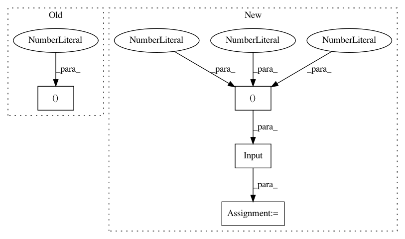

9c868282d2a38912259e78cd5a364a662f9c780e,tests/preprocessing/test_object_detection.py,TestDebugObjectDetectionGenerator,test_flow,#TestDebugObjectDetectionGenerator#,23
Before Change
generator = generator.flow(training, classes)
generator = keras_rcnn.preprocessing.ObjectDetectionGenerator()
generator = generator.flow([training[1]], classes, target_shape=(1200, 1600), scale=1, ox=0, oy=0)
After Change
class TestDebugObjectDetectionGenerator:
def test_flow(self):
image = keras.layers.Input((448, 448, 3))
training_options = {
"anchor_target": {
"allowed_border": 0,
"clobber_positives": False,
In pattern: SUPERPATTERN
Frequency: 3
Non-data size: 4
Instances
Project Name: broadinstitute/keras-rcnn
Commit Name: 9c868282d2a38912259e78cd5a364a662f9c780e
Time: 2017-10-26
Author: jyhung@broadinstitute.org
File Name: tests/preprocessing/test_object_detection.py
Class Name: TestDebugObjectDetectionGenerator
Method Name: test_flow
Project Name: BindsNET/bindsnet
Commit Name: 85a33cbdd17526ca38d7c1d4bab57085abc65279
Time: 2018-05-29
Author: djsaunde@umass.edu
File Name: examples/cifar10/minimal_reservoir.py
Class Name:
Method Name:
Project Name: stellargraph/stellargraph
Commit Name: 56e6adb2773497506875c7cbd7a1fe6b5c59fb4c
Time: 2020-04-19
Author: Huon.Wilson@data61.csiro.au
File Name: tests/layer/test_gcn.py
Class Name:
Method Name: test_GraphConvolution_dense